전기철도산업기사 (2020-08-22 기출문제)
1과목: 전기자기학
1. 강자성체가 아닌 것은?
- 철
- 구리
- 니켈
- 코발트
(정답률: 알수없음)

2. 패러데이관의 밀도와 전속밀도는 어떠한 관계인가?
- 동일하다.
- 패러데이관의 밀도가 항상 높다.
- 전속밀도가 항상 높다.
- 항상 틀리다.
(정답률: 알수없음)
3. 2㎌, 3㎌, 4㎌의 커패시터를 직렬로 연결하고 양단에 가한 전압을 서서히 상승시킬 때의 현상으로 옳은 것은? (단, 유전체의 재질 및 두께는 같다고 한다.)
- 2㎌의 커패시터가 제일 먼저 파괴된다.
- 3㎌의 커패시터가 제일 먼저 파괴된다.
- 4㎌의 커패시터가 제일 먼저 파괴된다.
- 3개의 커패시터가 동시에 파괴된다.
(정답률: 알수없음)
4. 자기회로에 대한 설명으로 틀린 것은? (단, S는 자기회로의 단면적이다.)
- 자기저항의 단위는 H(Henry)의 역수이다.
- 자기저항의 역수를 퍼미언스(perneance)라고 한다.
- “자기저항 = (자기회로의 단면을 통과하는 자속)/(자기회로의 총 기자력)” 이다.
- 자속밀도 B가 모든 단면에 걸쳐 균일하다면 자기회로의 자속은 BS이다.
(정답률: 알수없음)
5. 대전 도체 표면의 전하밀도는 도체 표면의 모양에 따라 어떻게 되는가?
- 곡률이 작으면 작아진다.
- 곡률 반지름이 크면 커진다.
- 평면일 때 가장 크다.
- 곡률 반지름이 작으면 작다.
(정답률: 알수없음)
6. 1Ah의 전기량은 몇 C 인가?
- 1/3600
- 1
- 60
- 3600
(정답률: 알수없음)
7. 선간전압이 66000V인 2개의 평행 왕복도선에 10kA의 전류가 흐르고 있을 때 도선 1m마다 작용하는 힘의 크기는 몇 N/m인가? (단, 도선 간의 간격은 1m 이다.)
- 1
- 10
- 20
- 200
(정답률: 알수없음)
8. 표의 ㉠, ㉡과 같은 단위로 옳게 나열한 것은?
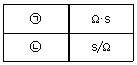
- ㉠ H, ㉡ F
- ㉠ H/m, ㉡ F/m
- ㉠ F, ㉡ H
- ㉠ F/m, ㉡ H/m
(정답률: 알수없음)
9. 지름 2mm의 동선에 π(A)의 전류가 균일하게 흐를 때 전류밀도는 몇 A/m2인가?
- 103
- 104
- 105
- 106
(정답률: 알수없음)
10. 비유전율이 2.8인 유전체에서의 전속밀도가 D = 3.0×10-7 C/m2 일 때 분극의 세기 P는 약 몇 C/m2 인가?
- 1.93×10-7
- 2.93×10-7
- 3.50×10-7
- 4.07×10-7
(정답률: 알수없음)
11. 반지름이 a(m)인 도첵에 전하 Q(C)을 주었을 때, 구 중심에서 r(m) 떨어진 구 외부(r＞a)의 한 점에서의 전속밀도 D(C/m2)는?
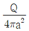
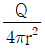
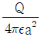
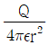
(정답률: 알수없음)
12. 자기 인덕턴스의 성질을 설명한 것으로 옳은 것은?
- 경우에 따라 정(+) 또는 부(-)의 값을 갖는다.
- 항상 정(+)의 값을 갖는다.
- 항상 부(-)의 값을 갖는다.
- 항상 0 이다.
(정답률: 알수없음)
13. 진공 중에 판간 거리가 d(m)인 무한 평판 도체 간의 전위차(V)는? (단, 각 평판 도체에는 면전하일도 +σ(C/m2), -σ(C/m2)가 각각 분포되어 있다.)
- σd
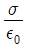
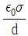
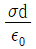
(정답률: 알수없음)
14. 무한 평면 도체로부터 d(m)인 곳에 점전하 Q(C)가 있을 때 도체 표면상에 최대로 유도되는 전하밀도는 몇 C/m2 인가?
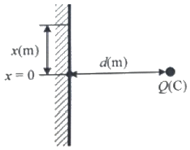
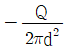
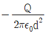
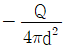
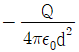
(정답률: 알수없음)
15. 맥스웰(Maxwell) 전자방정식의 물리적 의미 중 틀린 것은?
- 자계의 시간적 변화에 따라 전계의 회전이 발생한다.
- 전도전류와 변위전류는 자계를 발생시킨다.
- 고립된 자극이 존재한다.
- 전하에서 전속선이 발산한다.
(정답률: 알수없음)
16. 2Wb/m2인 평등 자계 속에 길이가 30cm인 도선이 자계와 직각 방향으로 놓여있다. 이 도선이 자계와 30°의 방향으로 30m/s의 속도로 이동할 때, 도체 양단에 유기되는 기전력(V)의 크기는?
- 3
- 9
- 30
- 90
(정답률: 알수없음)
17. 무손실 유전체에서 평면 전자파의 전계 E와 자계 H 사이 관계식으로 옳은 것은?
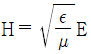
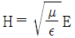
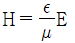
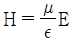
(정답률: 알수없음)
18. 공기 중에 있는 무한 직선 도체에 전류 I(A)가 흐르고 있을 때 도체에서 r(m) 떨어진 점에서의 자속밀도는 몇 Wb/m2인가?
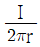
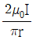
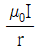
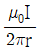
(정답률: 알수없음)
19. 어떤 자성체 내에서의 자계의 세기가 800 AT/m이고 자속밀도가 0.⑤ Wb/m2일 때 이 자성체의 투자율은 몇 H/m인가?
- 3.25 × 10-5
- 4.25 × 10-5
- 5.25 × 10-5
- 6.25 × 10-5
(정답률: 알수없음)
20. 전계의 세기가 5×102(V/m)인 전계 중에 8×10-8(C)의 전하가 놓일 때 전하가 받는 힘은 몇 N 인가?
- 4×10-2
- 4×10-3
- 4×10-4
- 4×10-5
(정답률: 알수없음)
2과목: 전력공학
21. ( ) 안에 들어갈 알맞은 내용은?
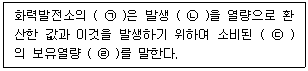
- ㉠ 손실율, ㉡ 발열량, ㉢ 물, ㉣ 차
- ㉠ 열효율, ㉡ 전력량, ㉢ 연료, ㉣ 비
- ㉠ 발전량, ㉡ 증기량, ㉢ 연료, ㉣ 결과
- ㉠ 연료소비율, ㉡ 증기량, ㉢ 물, ㉣ 차
(정답률: 알수없음)
22. 변류기를 개방할 때 2차측을 단락하는 이유는?
- 1차측 과전류 보호
- 1차측 과전압 방지
- 2차측 과전류 보호
- 2차측 절연보호
(정답률: 알수없음)
23. 역률 0.8(지상), 480kW 부하가 있다. 전력용 콘덴서를 설치하여 역률을 개선하고자 할 때 콘덴서 220kVA를 설치하면 역률은 몇 %로 개선되는가?
- 82
- 85
- 90
- 96
(정답률: 알수없음)
24. 어떤 발전소의 유효 낙차가 100m 이고, 사용수량이 10m3/s 일 경우 이 발전소의 이론적인 출력(kW)은?
- 4900
- 9800
- 10000
- 14700
(정답률: 알수없음)
25. 3상 1회선의 송전선로에 3상 전압을 가해 충전할 때 1선에 흐르는 충전전류는 30A, 또 3선을 일괄하여 이것과 대지사이에 상전압을 가하여 충전시켰을 때 전 충전전류는 60A가 되었다. 이 선로의 대지정전용량과 선간정전용량의 비는? (단, 대지정전용량 = Cs, 선간정전용량 = Cm 이다.)
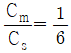
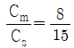
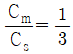
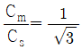
(정답률: 알수없음)
26. 3상으로 표준전압 3kV, 용량 600kW, 역률 0.85로 수전하는 공장의 수전회로에 시설할 계기용 변류기의 변류비로 적당한 것은? (단, 변류기의 2차 전류는 5A이며, 여유율은 1.5배로 한다.)
- 10
- 20
- 30
- 40
(정답률: 알수없음)
27. 수전단 전압이 송전단 전압보다 높아지는 현상과 관련된 것은?
- 페란티 효과
- 표피 효과
- 근접 효과
- 도플러 효과
(정답률: 알수없음)
28. 피뢰기의 제한전압이란?
- 사용주파전압에 대한 피뢰기의 충격방전 개시전압
- 충격파 침입 시 피뢰기의 충격방전 개시전압
- 피뢰기가 충격파 방전 종료 후 언제나 속류를 확실히 차단할 수 있는 상용주파 최대전압
- 충격파 전류가 흐르고 있을 때의 피뢰기 단자전압
(정답률: 알수없음)
29. 단성 교류회로가 3150/210 V의 승압기를 80kW, 역률 0.8인 부하에 접속하여 전압을 상승시키는 경우 약 몇 kVA의 승압기를 사용하여야 적당한가? (단, 전원전압은 2900V 이다.)
- 3.6
- 5.5
- 6.8
- 10
(정답률: 알수없음)
30. 철탑의 접지저항이 커지면 가장 크게 우려되는 문제점은?
- 정전 유도
- 역섬락 발생
- 코로나 증가
- 차폐각 증가
(정답률: 알수없음)
31. 송전선로의 중성점을 접지하는 목적으로 가장 알맞은 것은?
- 전선량의 절약
- 송전용량의 증가
- 전압강하의 감소
- 이상 전압의 경감 및 발생 방지
(정답률: 알수없음)
32. 발전기의 정태 안정 극한전력이란?
- 부하가 서서히 증가할 때의 극한전력
- 부하가 갑자기 크게 변동할 때의 극한전력
- 부하가 갑자기 사고가 났을 때의 극한전력
- 부하가 변하지 않을 때의 극한전력
(정답률: 알수없음)
33. 수전용 변전설비의 1차측에 설치하는 차단기의 용량은 어느 것에 의하여 정하는가?
- 수전전력과 부하율
- 수전계약용량
- 공급측 전원의 단락용량
- 부하설비용량
(정답률: 알수없음)
34. 송전선로에서 4단자정수 A, B, C, D 사이의 관계는?
- BC – AD = 1
- AC – BD = 1
- Ab – CD = 1
- AD – BC = 1
(정답률: 알수없음)
35. 다음 중 전압강하의 정도를 나타내는 식이 아닌 것은? (단, ES는 송전단전압, ER은 수전단전압이다.)
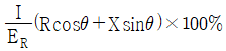
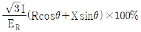
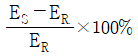
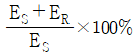
(정답률: 알수없음)
36. 다음 중 전력선에 의한 통신선의 전자유도장해의 주된 원인은?
- 전력선과 통신선사이의 상호 정전용량
- 전력선의 불충분한 연가
- 전력선의 1선 지락 사고 등에 의한 영상전류
- 통신선 전압보다 높은 전력선의 전압
(정답률: 알수없음)
37. 화력발전소에서 탈기기를 사용하는 주 목적은?
- 급수 중에 함유된 산소 등의 분리 제거
- 보일러 관벽의 스케일 부착의 방지
- 급수 중에 포함된 염류의 제거
- 연소용 공기의 예열
(정답률: 알수없음)
38. 조상설비가 있는 발전소 측 변전소에서 주변압기로 주로 사용되는 변압기는?
- 강압용 변압기
- 단권 변압기
- 3권선 변압기
- 단상 변압기
(정답률: 알수없음)
39. 전력 사용의 변동 상태를 알아보기 위한 것으로 가장 적당한 것은?
- 수용률
- 부등률
- 부하율
- 역률
(정답률: 알수없음)
40. 30000kW의 전력을 50km 떨어진 지점에 송전하려고 할 때 송전전압(kV)은 약 얼마인가? (단, still식에 의하여 산정한다.)
- 22
- 33
- 66
- 100
(정답률: 알수없음)
3과목: 전기철도공학
41. 커패시터 시스템 전차 선로에서 조가선은 St 90mm2(0.697 kgf/m), 전차선은 Cu 110mm2(0.998 kgf/m)로 사용하고, 행거의 전차선 단위 길이 당 환산 중량을 0.1 kgf/m라 하면 역구내의 경우(경간 : 50m)에 필요한 가고 H(m)는 약 얼마인가? (단, 전차선의 표준장력은 1000kgf 이다.)
- 0.56
- 0.71
- 0.87
- 0.96
(정답률: 알수없음)
42. 가공전차선로의 이선장에 대책으로 틀린 것은?
- 아크방전의 발생을 작게 한다.
- 이선 자체를 작게 한다.
- 아크방전이 발생해도 미치는 장애를 작게 한다.
- 전차선의 높이를 높게 한다.
(정답률: 알수없음)
43. 직류변전설비의 급전구분소의 기능으로 틀린 것은?
- 사고구간을 한정구분
- 고장검출의 용이
- 전차선로의 전압강하률 증가
- 사고나 작업 시 정전구간의 단축
(정답률: 알수없음)
44. 다음 중 조가선에서 요구하는 성능으로 틀린 것은?
- 기계적 강도가 작을 것
- 내식성이 클 것
- 내마모성이 클 것
- 도전성이 좋을 것
(정답률: 알수없음)
45. 커티너리 가선구간과 강체 가선구간의 접속구간을 무엇이라 하는가?
- 인류구간
- 이행구간
- 접속구간
- 장력구간
(정답률: 알수없음)
46. 지하구간에서 곡선반경이 500m인 경우 직선구간 건축 한계보다 몇 mm를 추가로 확보하여야 하는가?
- 80
- 90
- 100
- 120
(정답률: 알수없음)
47. 직류 전철화 구간에서 레일과 대지간의 누설전류를 경감하기 위한 설비는?
- 직류 전압조정장치
- 급전 타이 포스트
- 정류 포스트
- 흡상 변압기
(정답률: 알수없음)
48. 전철용 교류발전소에서 재폐로 계전기를 나타내는 기구번호는 어느 것인가?
- 51F
- 44F
- 99F
- 79F
(정답률: 알수없음)
49. 직류 전차선로 구간에서 피뢰기는 급전선 긍장으로 약 몇 m 마다 설치하는가?
- 500
- 750
- 1000
- 1500
(정답률: 알수없음)
50. 교류 급전 방식의 특징으로 틀린 것은?
- 대용량 장거리 수송에 유리하다.
- 에너지 이용률이 높다.
- 전식의 우려가 없다.
- 통신 유도장해 대책이 필요 없다.
(정답률: 알수없음)
51. 전차선로 구성이 전차선과 레일만으로 된 것과 레일과 병렬로 별도의 귀선을 설치한 2가지의 방식이 있는 전기철도 교류 급전방식은?
- 제3궤조식
- 흡상변압기방식
- 직접급전방식
- 단권변압기방식
(정답률: 알수없음)
52. 교류 전기철도 구간에서 절연구분장치가 설치되어 있지 않는 곳은?
- SS(변전소) 앞
- SP(급전구분소) 앞
- SSP(보조급전구분소) 앞
- 직류와 교류가 바뀌는 곳
(정답률: 알수없음)
53. 전기철도에서 변전설비를 구성할 때 고려해야 할 사항으로서 가장 거리가 먼 것은?
- 선로의 수송량
- 연변의 상황에 따른 경제성
- 전원사정
- 역간거리
(정답률: 알수없음)
54. 교류전차선로에서 부급전선의 표준지지방법은?
- 수직조가방식
- 수평조가방식
- 직렬조가방식
- 병렬조가방식
(정답률: 알수없음)
55. 열차 견인력 30000kg, 속도 70km/h로 운전할 때 주 전동기의 출력(kW)은 얼마인가?
- 2172
- 3644
- 5722
- 6100
(정답률: 알수없음)
56. 전기차 형태에 의한 분류에서 경량전철이 아닌 것은?
- 모노레일 경량전철
- 고무차륜 경량전철
- 선형유도전동기 경량전철
- 강색 경량전철
(정답률: 알수없음)
57. 전기철도 교류접전 단권변압기방식의 지하구간 및 공용 접지방식 구간에서 섬락보호를 위해 철재·지지물을 연접하여 귀선레일에 접속하는 전선은?
- 보호선
- 비절연 보호선
- 지락도선
- 조가선
(정답률: 알수없음)
58. 교류전기철도 급전방식에서 직접급전방식에 대한 설명으로 옳은 것은?
- 회로구성이 복잡하다.
- 통신유도장해가 적다.
- 누설전류가 적다.
- 레일전위가 다른 방식에 비하여 크다.
(정답률: 알수없음)
59. 다음 중 전기철도의 구성 설비에 해당되지 않는 것은?
- 급전설비
- 신호설비
- 부하설비
- 전철변전설비
(정답률: 알수없음)
60. 전차선로의 경간 설정 시 곡선반경 500m 초과 ~ 700m 이하 구간의 전주표준경간(m)은?
- 60
- 50
- 40
- 30
(정답률: 알수없음)
4과목: 전기철도구조물공학
61. 우물통형 기초에서 기초 하부의 유효지지력 σ1(kgf/m2)을 구하는 계산식은? (단, W : 하부에 가해지는 전체 수직 하중(kgf), A : 기초의 하부면적(m2), g : 지내력(kgf/m2), F : 안전율이다.)
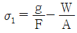
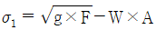
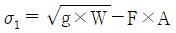
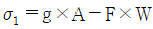
(정답률: 알수없음)
62. 전기철도에서 사용하는 용어에 관한 설명으로 틀린 것은?
- 부급전선, 보호선, 비절연보호선, 가공공동지선, 섬락보호지선은 전선에 포함하지 않는다.
- 전차선이란 전기차량의 집전장치에 접촉 동작하여 이에 전기를 공급하는 가공전선을 말한다.
- 합성 전차선이랑 조가선(강체 포함), 전차선, 행거, 드롭퍼 등으로 구성한 가공전선을 말한다.
- 가공전차선로는 가공전차선 및 이를 지지하는 설비를 총괄한 것을 말한다.
(정답률: 알수없음)
63. 궁형 지선에 대한 설명으로 틀린 것은?
- 전철주 바로 옆에 근가를 시설하는 지선
- 지선과 전주와의 표준 취부각도가 적용되지 않는 지선
- 수평지선이라고 부르는 것으로 일반적이고 기본적인 지선
- 전철주의 구부러짐을 보완해주는 특별한 경우에 사용되는 지선
(정답률: 알수없음)
64. 힘을 표시하는 3요소가 아닌 것은?
- 모멘트
- 크기
- 방향
- 작용점
(정답률: 알수없음)
65. 그림과 같은 라멘의 A점에서의 휨모멘트(kN·m)는?
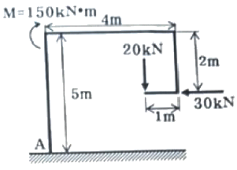
- 120
- 150
- 180
- 200
(정답률: 알수없음)
66. 각종 빔(Beam)에 대한 장, 단점을 설명한 것으로 틀린 것은?
- 가동 브래킷은 전차선을 일괄해서 장력 조정할 수 있어 가선특성이 좋은 장점이 있다.
- 스펜선 빔은 온도변화에 따른 스펜선 이도 조정이 필요한 단점이 있다.
- 고정빔은 횡화중에 약한 단점이 있다.
- 진동방지장치, 곡선당김장치를 가압빔에 취부하기 때문에 경점이 적은 장점이 있다.
(정답률: 알수없음)
67. 프와송의 비는?
- 응력/변형률
- 변형률/응력
- 세로변형도/가로변형도
- 가로변형도/세로변형도
(정답률: 알수없음)
68. 단면 1차 모멘트를 표시하는 단위는?
- m
- m2
- m3
- m4
(정답률: 알수없음)
69. 가공 전차선로에 발생하는 전차선의 기울기 요소가 아닌 것은?
- 지지물의 변형에 의한 기울기
- 전력부하의 불평형에 의한 기울기
- 곡선로에 의한 기울기
- 풍압에 의한 기울기
(정답률: 알수없음)
70. 폴리머(Polymer) 애자의 단점으로 옳은 것은?
- 내후성(Weather-ability)이 취약하다.
- 충격강도가 자기애자에 비하여 작다.
- 기계적 강도가 세라믹 애자에 비하여 작다.
- 세라믹 애자에 비하여 무게가 크므로 운반 및 설치가 불편하다.
(정답률: 알수없음)
71. 2차원 구조물 중 직선재를 삼각형으로 구성하되 절점은 마찰이 없는 회전절점으로 연결하여 만든 구조로 각 부재는 압축력과 인장력을 받게 되는 구조물은?
- 라멘
- 샤프트
- 인장보
- 트러스
(정답률: 알수없음)
72. 지름 60mm, 길이 2m인 봉강에 축방향을 18000kgf의 인장력이 작용하여 6mm가 늘어났다면 이때의 인장응력은 약 몇 kgf/cm2 인가?
- 956
- 1217
- 1427
- 637
(정답률: 알수없음)
73. 사용목적에 따라 1종과 2종으로 구별되며, 2종이 전차선로에 이용되고 있는 전철주의 종류는?
- 목주
- 철주
- 콘크리트주
- 조합철주
(정답률: 알수없음)
74. 부재 축방향에 수직인 단면에 생기는 응력으로 틀린 것은?
- 수직응력
- 인장응력
- 압축응력
- 휨응력
(정답률: 알수없음)
75. 다음 중 전달률을 이용하여 부정정 구조물을 풀이하는 방법은?
- 공액보법
- 모멘트 분배법
- 단위하중법
- 탄성하중법
(정답률: 알수없음)
76. 다음 중 강도계산에 사용되는 수직하중의 종류가 아닌 것은?
- 풍압하중
- 피빙하중
- 설하중
- 자중
(정답률: 알수없음)
77. 힌지지점에서의 반력 수는?
- 1개
- 2개
- 3개
- 4개
(정답률: 알수없음)
78. 다음 중 3t과 4t이 한 점에서 60°로 작용할 때 힘의 합력은 약 몇 t 인가?
- 4.06
- 5.01
- 6.08
- 12
(정답률: 알수없음)
79. 축방향으로 인장력이나 압축력을 받는 1차원 구조물은?
- 쉘(shell)
- 플레이트(plate)
- 봉(rod)
- 패널(panel)
(정답률: 알수없음)
80. 주재에 산형강을 사용하고 사재에도 산형강 또는 평간을 사용하는 전철주는?
- 강관주
- 조합철주
- H형강주
- PC주
(정답률: 알수없음)